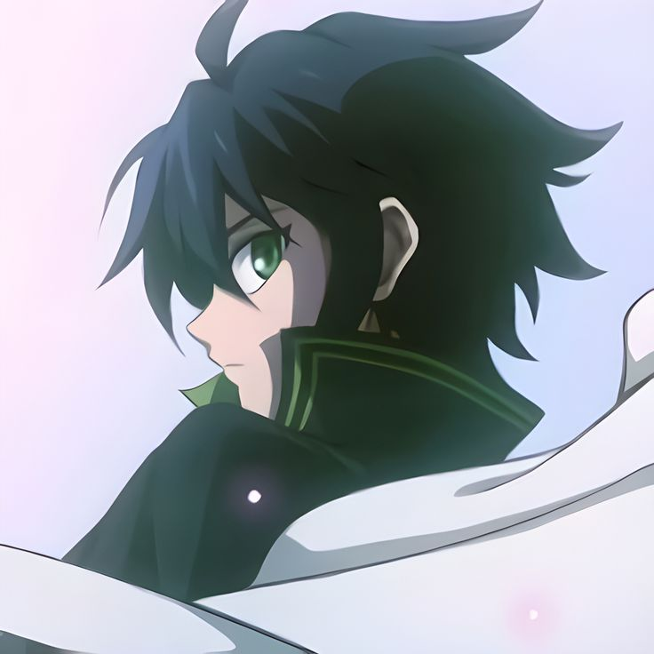
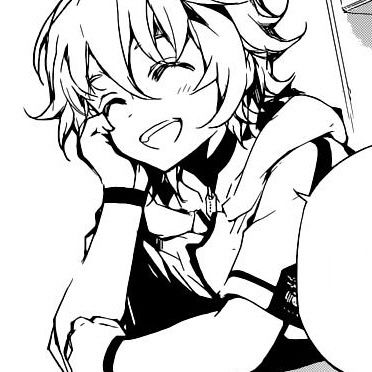
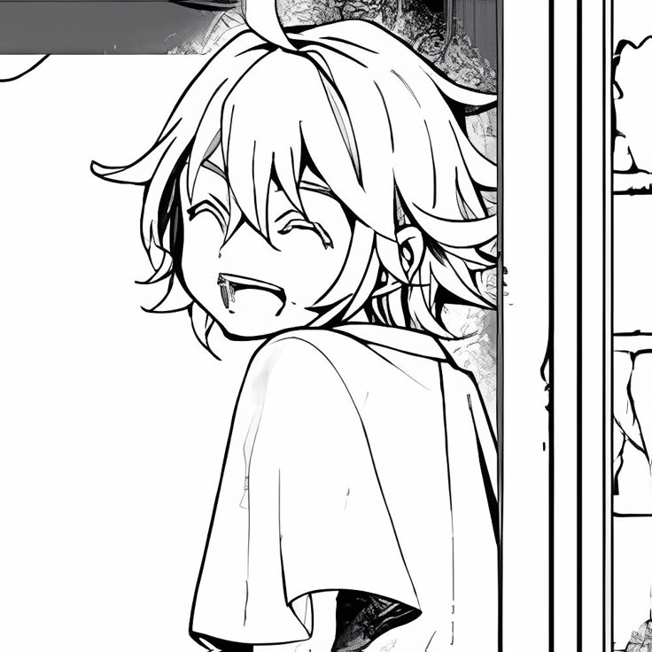
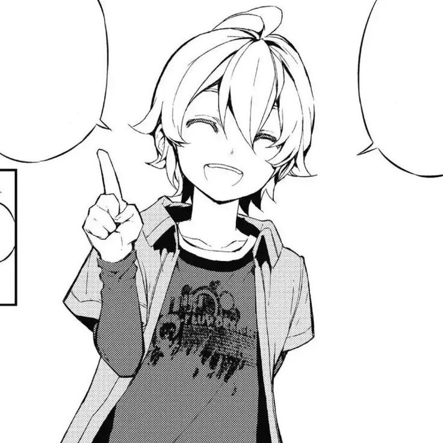
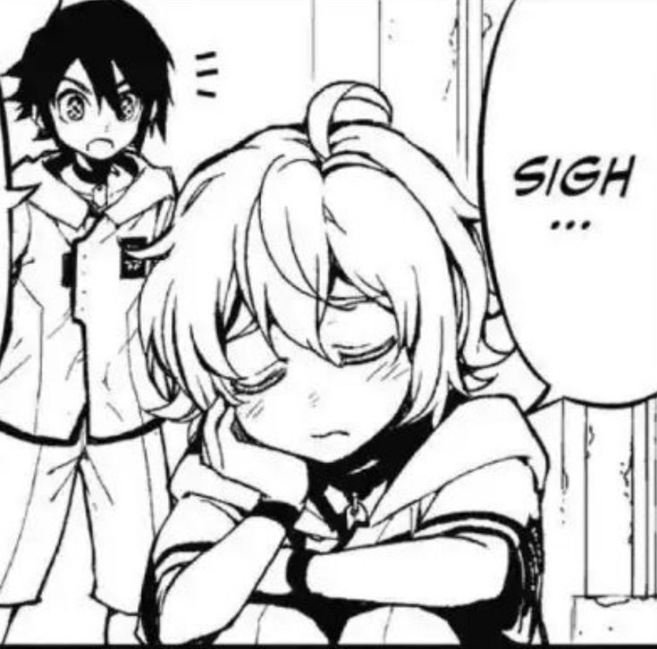

happy valentine!!
this web made with huge of love
open

kieranth
things i like about you




continue
Sua, would you give me the honor of officially being your boyfriend and taking care of your heart from now on?
yes
no